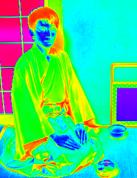

プロフィール
- 名前：越田 裕之 (こしだ ひろゆき)
- 生年月：1991年8月
- 趣味：茶道
- 好きな言葉：看脚下，ものごとは努力によって解決しない
リンク：
学歴
- 2011-2015 京都大学 理学部
- 2015-2021 京都大学 理学研究科 化学専攻 博士課程
- 2021年3月 博士(理学) 「金属表面における一酸化窒素の吸着状態と磁性」
指導教員: 奥山 弘 准教授
職歴
- 2019-2021 学振特別研究員 DC2
- 2021- 東京大学生産技術研究所 着霜制御サイエンス社会連携研究部門 特任研究員
所属: - 福谷研究室 福谷研究室，Wilde研究室
連携: 田中 肇 研究グループ (東大先端研)
ひとこと
- 「シブい」実験研究を行いたいです。よろしくお願いします。